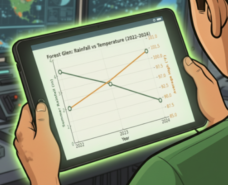

Eco-Responders: After the Fire
You've been called to investigate what happened after a wildfire in Maple Valley. Your decisions will help shape the community's recovery.
Learning Objectives & Mission Outcomes
By the end of this lesson, you will be able to:
You will show your learning by: making evidence-based decisions, writing in your field journal, building a system model, and creating a fire-smart PSA.
Arizona Science Standard 5.L4U3.11: Obtain, evaluate, and communicate evidence about how natural and human-caused changes to habitats or climate can impact populations.
After the Fire
The air smells faintly of pine and smoke, reminders that nature is constantly changing.
As an Eco-Responder, you've learned that every fire tells two stories: one of loss and one of renewal.
This week, your team is on alert. Just over the ridge, a town called Forest Glen was hit by a wildfire two weeks ago.
Your town, Maple Valley, sits just downwind.


What to Expect
As an Eco-Responder, your job is to find out how wildfires start, spread, and change habitats.
You'll look at evidence inspired by NOAA weather data and FEMA-style field reports to spot patterns and causes.
Your mission: use your Field Journal to track clues, reflect on your choices, and build a final plan that helps Maple Valley rebuild safely for both people and wildlife.
Think Like a Scientist prompts will help you turn evidence into explanations. Mission Challenges are optional deeper dives.
Mission Glossary: Key Terms to Know
Fuel moisture: how much water is stored in plants and soil.
Red Flag Warning: a weather alert for hot, dry, windy wildfire conditions.
Defensible space: a safety zone around a home with fewer flammable materials.
Fire-resistant materials: materials like stucco or metal roofs that do not burn easily.
Feedback loop: when one change causes another that strengthens or weakens the first.
Ecosystem recovery: how plants, animals, and soil rebuild after disturbance.
Want to Learn More?
Relative humidity, drought index, serotinous cones, and native shrubs all help scientists understand fire risk and recovery.
Ping! Ping! Ping!

Your Eco-Responder tablet flashes red.
Jordan, your FEMA mentor, appears on the screen.
"Forest Glen’s fire is finally contained," he says, "but NOAA just issued a Red Flag Warning for Maple Valley."
Relative humidity is 14%, and winds are steady at 25 mph, strong enough to push embers a mile.
"We need evidence from Forest Glen before the next spark. Don’t forget your field journal."
Where will you begin?
Look at NOAA-style weather and drought clues first.
Head straight to the fire zone and observe what happened on the ground.
NOAA Data Investigation
You arrive at the mobile lab, and your tablet connects to NOAA's drought archive.
"See the trend? Less rain and more heat mean lower fuel moisture," Jordan mutters. "That's a dangerous mix. The plants themselves become fuel."
With your data uploaded, you now need to understand the field conditions.


Field Journal
Record one pattern that increased fire risk and explain its effect on plants and animals.
Mission Challenge (Optional)
Predict what might happen to the forest next year if rainfall continues to drop and temperatures stay high.
After the Fire
Jordan closes the graphs.
"If the weather looked like this, what do you think the team in Forest Glen might be seeing right now?"
You pull up the satellite overlay. The hills are dry and tan instead of green. The humidity sensor reads 13%.
"Describe what the forest probably looks like. What would happen to soil, plants, or wildlife after months of this heat?"
Your observations complete the picture. Now it's time to decide what matters most.

Field Journal
Infer what the fire zone looks like based on your climate data. Use one piece of evidence to support your idea.
After the Fire

You ride beside Ranger Marisol into Forest Glen.
The air smells like ash and rain. Your tablet displays photos from Ranger Marisol.
In the photos, you notice dry, crumbly soil, green sprouts poking through black earth, and metal-roofed homes still standing while wood roofs are gone.
"Serotinous cones," she explains. "Some trees need heat to start over."
Field Journal
Record two observations showing how the fire affected people or wildlife.
Mission Challenge (Optional)
Research a local fire-adapted plant. How does it help stabilize soil or promote regrowth?
After the Fire
"We still don’t have NOAA’s climate data," Marisol says. "But you’ve seen the ground. What kind of weather would cause this?"
You notice brittle leaves that crumble in your hand. The streambed nearby is cracked.
"Use your field clues. Was this a wet year or a dry one? Cool or hot? Explain your reasoning."
Your observations complete the picture. Now it's time to decide what matters most.

Field Journal
Infer what the weather patterns were before the fire. Support your answer with at least two clues from your observations.
After the Fire
You regroup with Jordan and Ranger Marisol.
The topographic map on your tablet glows red where winds funneled through narrow canyons.
Two reports appear on your tablet: a FEMA Report about human impacts and a Forest Service Report about ecosystem recovery.
"Every decision we make next will depend on which evidence we prioritize," Jordan says.

Which evidence will you prioritize?
Look closely at building choices, evacuation, and defensible space.
Focus on regrowth, erosion, runoff, and living systems.
Connect human choices with ecosystem recovery patterns.
After the Fire

You zoom in on Forest Glen’s town blocks.
"Notice the pattern," Jordan says. "Areas with defensible space survived."
You calculate that 22 of 30 homes with metal roofs remain, while only 4 of 30 wood-shingled homes stand.
"Let’s model how one building choice can protect hundreds."
Field Journal
What human choices made the biggest difference in survival rates? Support your answer with one data pattern.
After the Fire
You and Marisol walk to the nearby canyon slopes.
"The manzanita’s already back," Marisol says. "Roots that stayed alive underground start growing again."
You notice bare slopes nearby turning to mud after rain.
A sensor alert pops up: nitrate levels in the creek doubled since the fire.

Field Journal
How are living systems responding differently to fire damage? What evidence shows positive and negative recovery?
After the Fire
You split your tablet screen: one half shows neighborhood maps, the other shows forest data.
You start matching patterns: where metal-roofed homes survived, soil erosion is lowest. Where burned debris was cleared too fast, runoff increased.
"Everything’s connected," Jordan says. "Our recovery plans have to be, too."

Field Journal
How do human actions and ecosystem recovery influence each other? Explain using one example.
After the Fire

A green icon flashes on your tablet: TEAM BRIEFING IN PROGRESS.
Jordan’s voice comes through the speaker. "Eco-Responders, it's time to share what each investigation team discovered."
Screens blink on one by one as you compare findings from the Human Impact, Ecosystem, and Combined Analysis Reports.
Team A: Human Impact Report
Homes with defensible space had a 70% survival rate. Metal roofs resisted embers better than wood shingles. Evacuation drills helped families respond quickly.
Team B: Ecosystem Report
Fire-adapted plants sprouted within two weeks. Bare slopes near over-cleared areas eroded after rainfall. Creek nitrate levels doubled after the fire.
Team C: Combined Analysis
Neighborhoods that used fire-smart designs supported faster wildlife return and less erosion. Communities that plan together recover faster.
Field Journal
Write one cause-and-effect link between a human decision and a natural outcome. Explain why understanding both sides helps create a stronger recovery plan.
Mission Challenge (Optional)
Design a fire-smart home. Describe one building feature that could protect homes from future wildfires.
After the Fire
After the briefing, two images pop up on your tablet: destroyed vs. fire-smart neighborhood.
"Same fire, same wind. Different results," Marisol says.
Areas that cleared brush but left native shrubs recovered fastest. Over-cleared zones washed away after the first rain.
Days later, your findings reach Maple Valley’s town hall.

Field Journal
How can human choices help or harm both people and wildlife after a fire?
After the Fire

Back in Maple Valley, the town hall hums with voices.
Mayor Elena steps to the podium. "If we prepare wisely, we can protect both our homes and our habitats before the next fire season."
She shares three recovery plans for the community. Each plan balances human needs and environmental health differently.
Plan A: Rebuild Fast
Restore homes right away with minimal restrictions.
Science note: Speeds recovery but increases erosion and habitat loss.
Plan B: Rebuild Smarter
Use fire-resistant materials and restore native plants.
Science note: Reduces ignition risk and supports recovery.
Plan C: Balanced Plan
Rebuild in stages with safety and habitat protection.
Science note: Supports both human safety and ecosystem recovery.
Field Journal
Which plan do you recommend? Cite two pieces of evidence to justify your choice.
After the Fire
Your team gathers back at the command van.
Jordan loads a new model. "This is a feedback loop. It’s how one change in the environment can cause a cycle that keeps repeating and makes the original problem stronger or weaker."
He taps the screen. "Sometimes humans can break a loop or create a new one. Adding trees, improving soil, or managing fire-smart zones can flip a damaging loop into a healing one."


Field Journal
What happens as the loop repeats? How could humans change this loop to help the system recover?
After the Fire
Back in the command van, you open the modeling app.
Arrows link climate → vegetation → wildlife → human choices. "Add the feedback loop," Jordan points out. "Fewer trees = less shade = hotter ground = drier fuel next season."
Every loop shows how one small change can ripple through the system.
Word Bank
Drag a card into each step of the loop.
Field Journal
Build your feedback loop model, then explain what happens when the loop repeats and how humans could change one part to help recovery.
After the Fire
A message appears from Forest Glen Elementary on your tablet.
"Thanks, Eco-Responders! Our forest is sprouting green again. We're tracking rainfall with NOAA’s live precipitation map. Want to join our project?"
You realize the mission was never just about studying disasters; it’s about collecting data to prevent the next one.

Field Journal
Write a short PSA or message sharing what your community can do to stay fire-smart.
Mission Challenge (Optional)
Turn your PSA into a digital poster, infographic, or 30-second video idea.
Mission Complete
A week later, you bike past a sign reading: Maple Valley — Fire-Smart Zone.
Jordan sends one last message: "Outstanding work, Eco-Responder. Science and empathy together, that’s real leadership."

Final Reflection
Pick two of the following reflection questions to answer.
PSA Builder
Create your final fire-smart message for your community.
No image selected.
Think Like a Scientist
How does your message show cause and effect? What evidence supports your recommendation?